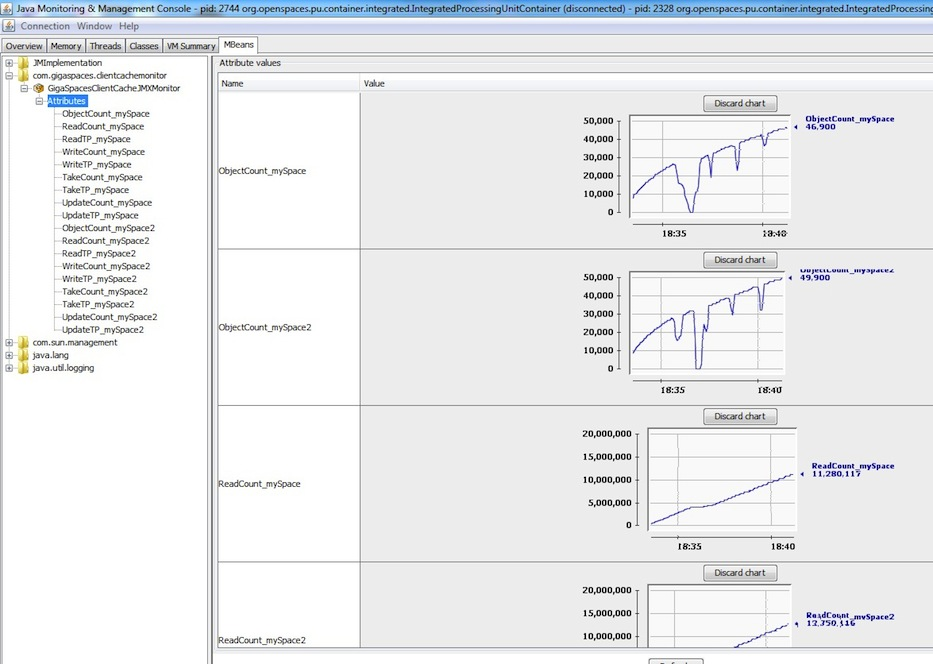

The Local View/Cache JMX Monitor monitors the number of objects stored within the client side cache and the activities performed with it. You can use JConsole to graph the number of objects within the local view/cache and other exposed statistics while the application is running. The Local View/Cache JMX Monitor exposing the following statistics:
Object Count
Read Count, Take Count, Write Count, Update Count
Read TP, Take TP, Write TP, Update TP
To use the Local View/Cache JMX Monitor:
Download the monitor JAR and add it into your application classpath.
Add into your local view/cache configuration the space-config.filters.Statistics.enabled parameter as demonstrated below.
Add into your application Spring file the gsClientCacheMonitor bean. The following example assumes you have an application using two master spaces, each has its own client local cache proxy. See how the GigaSpacesClientCacheJMXMonitor is configured to specify the different proxies used by the application:
<os-core:space-proxy id="space" space-name="mySpace" />
<os-core:local-cache id="localCacheSpace" space="space">
<os-core:properties>
<props>
<prop key="space-config.filters.Statistics.enabled">true</prop>
</props>
</os-core:properties>
</os-core:local-cache>
<os-core:giga-space id="gigaSpace1" space="localCacheSpace"/>
<os-core:space-proxy id="space" space-name="mySpace2" />
<os-core:local-cache id="localCacheSpace2" space="space2">
<os-core:properties>
<props>
<prop key="space-config.filters.Statistics.enabled">true</prop>
</props>
</os-core:properties>
</os-core:local-cache>
<os-core:giga-space id="gigaSpace2" space="localCacheSpace2"/>
<bean id="gsClientCacheMonitor"
class="com.gigaspaces.clientcachemonitor.GigaSpacesClientCacheJMXMonitor">
<property name="gigaSpaceList" >
<list>
<ref bean="gigaSpace1"/>
<ref bean="gigaSpace2"/>
</list>
</property>
</bean>
You can specify up to 5 local View/Cache GigaSpace beans as part of the gigaSpaceList.
Start JConsole for your application JVM, move into the MBean Tab and select the GigaSpacesClientCacheJMXMonitor under the com.gigaspaces.clientcachemonitor.
Click the relevant statistics you would like to monitor, and Double click the cell on the right side panel. you may monitor the entire statistics by clicking on the Attributes tree icon and double clicking on each value at the left side panel.
A graph (or multiple graphs) should be presented illustrating the value of the monitored statistic(s). The graph(s) will be updated periodically.
The following example shows how you can monitor multiple local cache instances running within the same application:

This version of the local view/cache monitor does not reflect statistics for operations using the readByID operation from the local view/cache.